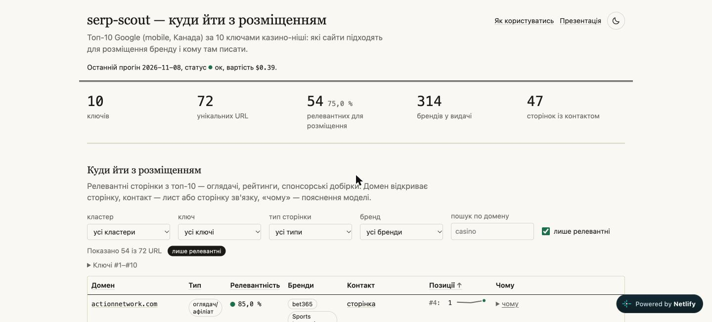
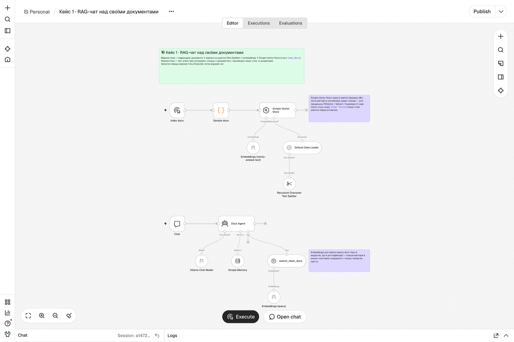
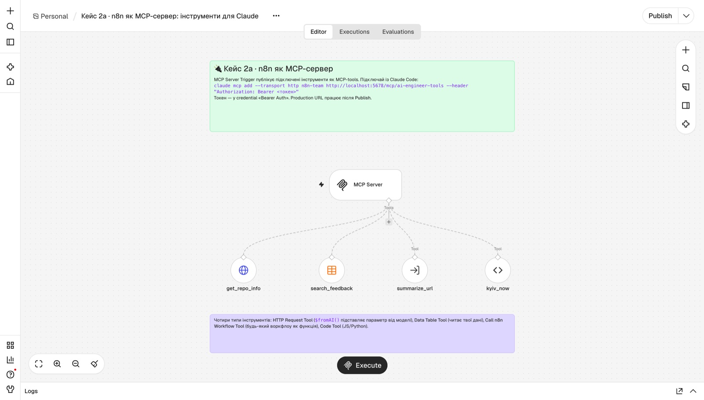
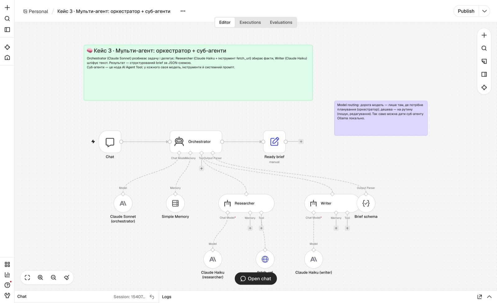
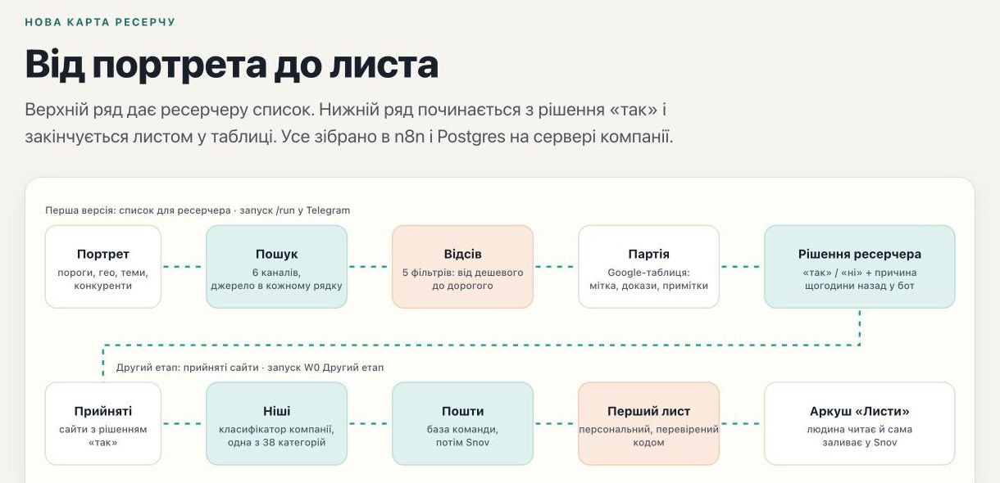
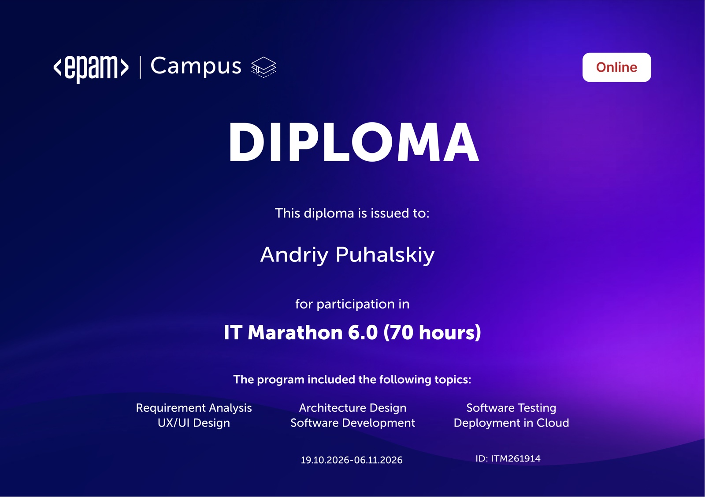

Кейс 01 · аутсорс, 10/2026
Telegram-бот AI-дайджестів новин і подкастів
Щоб вести галузевий Telegram-канал, треба щодня переглядати десятки джерел. Бот збирає їх сам, групує в сюжети й готує чернетку — редактор лише схвалює.
Як працює
Рішення, які роблять його надійним
- Дайджест пишеться лише із сюжетів, які підтвердили два й більше видань — менше шуму й вигадок.
- Черга задач у D1 зі state machine і повторами при збоях зовнішніх API.
- Денна стеля витрат: бюджет до $10 на місяць не може бути перевищений.
- Людина в контурі: без схвалення редактора нічого не публікується.
Кейс 02 · власний проєкт, з 10/2026
Автономний SMM-агент для LinkedIn
Від вибору теми до опублікованого поста з картинкою чи PDF-каруселлю — без ручної роботи, крім одного натискання «схвалити».
Як працює
Guardrails
- LLM працює лише над чернетками. Публікація, Telegram і стани — детерміновані скрипти.
- 5 перевірок у CI: межі запису, валідація за схемою, дедуплікація тем, stop-gate.
- Ліміт бюджету на запуск і на місяць із журналом витрат.
Кейс 03 · тестове завдання, 11/2026
serp-scout: щоденний розбір SEO-видачі для маркетологів iGaming
Маркетологу афіліат-команди треба знати, які сайти з топу Google беруть розміщення брендів і кому там писати. Інструмент щодня знімає видачу, а Claude розмічає кожну сторінку. Зроблено за день як тестове завдання — і працює далі сам.

Як працює
Що важливо
- Платимо лише за нові URL: відповіді моделі кешуються, прогін зупиняється при перевищенні бюджету.
- Збій однієї сторінки не валить прогін; секрети маскуються в логах.
- До інструмента додано методичку для маркетолога зі скріншотами і презентацію для замовника.
Кейс 04 · n8n self-hosted у Docker
n8n для AI-задач: RAG, MCP і мультиагентна оркестрація
Набір робочих workflow на власному інстансі n8n у Docker Compose. Показує, як швидко зібрати AI-функцію без тижня «обв'язки» в коді — і як підключити її до Claude Code.



Що ще в наборі
- LLM-пайплайн за розкладом: відгуки → тональність → тріаж → витяг полів → Telegram.
- Дайджест RSS із LLM-саммарі в Telegram.
- n8n як бекенд LLM-застосунку: webhook → модель → JSON за схемою.
- Evaluations: регресійні тести для промптів на датасеті.
- Error Workflow: сповіщення про будь-який збій.
Кейс 05 · для агенції SEO і лінкбілдингу, 11/2026
Конвеєр, що перетворює відеокурси на інтерактивне навчання
Новим співробітникам агенції треба швидко зрозуміти нішу iGaming і лінкбілдинг, а найкращі матеріали — це години відео. Одна команда бере плейлист і видає готовий курс українською з квізами.
Як працює
Що важливо
- Кожен крок кешується: повторний запуск коштує $0, а платний — лише після оцінки вартості й підтвердження.
- Таймкоди в конспекті клікабельні — відкривають відео в потрібному місці.
- Квізи перевіряють розуміння індустрії: типи iGaming-проєктів, що потрібно кожному і що може запропонувати агенція.
- Зміст курсів внутрішній, тому тут показано лише сам конвеєр.
Кейс 06 · для агенції SEO і лінкбілдингу, 11/2026
Бот, що шукає сайти для лінкбілдингу й готує перший лист
Ресерчер агенції збирав список сайтів для розміщення руками: пошук, метрики, перевірка кожного сайту. Бот під портрет проєкту сам знаходить нові сайти, відсіює явно непридатні й віддає список із джерелом і примітками в кожному рядку. Для прийнятих сайтів він бере пошту й пише персональний перший лист.

Як працює
Рішення, які роблять його надійним
- Ключ Ahrefs спільний з CRM замовника, тому кожен запит іде через одну обгортку з лімітом прогону, загальним лімітом і журналом витрат.
- Факт про домен купується один раз: метрики, перевірка сайту й пошта кешуються в Postgres.
- Бот відсіює лише явне. Сайт, який не вдалося відкрити, іде до людини з приміткою, а збій на одному сайті не зупиняє прогін.
- Лист перевіряє код (обсяг, будова, заборонені слова, повтор теми) і один раз повертає моделі на переписування.
- У workflow немає ключів та ID: усе читається з таблиці налаштувань, тож інша людина розгортає систему однією командою.
- Проєкт передано команді замовника разом з презентацією, картою процесу й методичкою на дев'ять сторінок. Дані клієнтів внутрішні, тому тут показано лише схему.
Кейс 07 · засновник, з 08/2026
AI Академія — безкоштовна навчальна платформа
Платформа українською про LLM, prompt engineering, Claude API, MCP та агентні системи. Зроблена з нуля до production мультиагентним конвеєром Claude Code.
Що всередині
- Квізи із серверною перевіркою відповідей і сертифікати з перевіркою за QR-кодом.
- Конвеєр розробки: PM → backend і frontend паралельно → QA з колами виправлень; окремі агенти для контенту й рецензії.
Кейс 08 · QA Automation і повний цикл розробки
Автотести, які ловлять дефекти до релізу
QA — моя перша спеціальність, тому в кожному AI-проєкті є тести, CI і перевірки даних.
Фреймворк Python + Playwright
З нуля для продуктової платформи: Page Object Model, регресія авторизації, OAuth/JWT, платежів і Checkout, REST API-тести. Багів на production стало на 30% менше.
EPAM IT Marathon 6.0 — застосунок онлайн-ресторану
Повний цикл: user stories з acceptance criteria, макет у Figma, деплой в AWS через Terraform (26 ресурсів), REST API на C# / .NET, екран на Angular і фреймворк автотестів Reqnroll + Playwright .NET + Allure в CI.
Диплом EPAM Campus: програма на 70 годин (аналіз вимог, UX/UI, архітектура, розробка, тестування, деплой у хмару), 19.10–06.11.2026, ID ITM261914.
Репозиторій на GitHub → Перевірити диплом на сайті EPAM →


Співпраця
Чим можу допомогти
Відкритий до роботи в команді (AI Automation Engineer, QA Automation, технічний Project Manager) і до проєктної роботи.
Автоматизація на n8n
Заявки, CRM, звіти, сповіщення в Telegram, AI-кроки всередині процесу. Розгортання у вашому Docker.
Telegram-бот з AI
Дайджести, контент, відповіді клієнтам — з модерацією людиною і стелею витрат на модель.
Звітність і дашборди
Дані з Notion, Jira чи Google Sheets зводяться автоматично, про відхилення приходить сповіщення.
Jira Automation
Аудит і налаштування правил, шаблони епіків і user stories за єдиним стандартом.
Автотести Python + Playwright
Фреймворк з нуля, регресія критичних сценаріїв, запуск у CI.